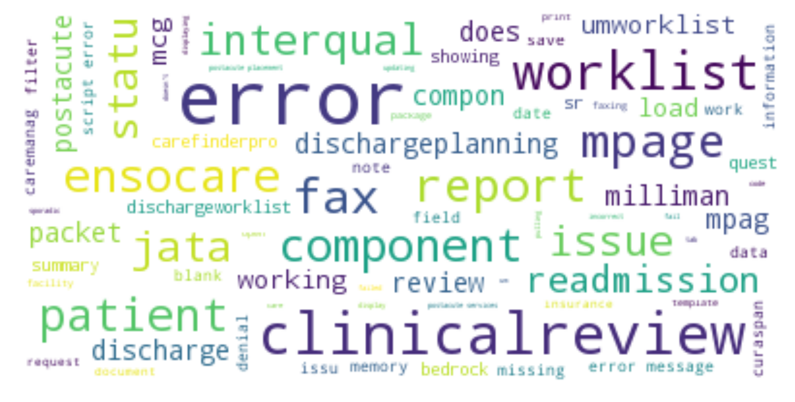

uCern discussion Text Mining
Created by Leonardo Ji / @jil_BIA
Text Mining
Rockhurst University
Why this topic
At work I use a work collaboration site called "uCern".
uCern allows a client support person to post a question to development team and a developer will answer the question.
I want to look at this particular support group within uCern for Care management solution.
Some questions
How many discussions in this uCern group?
How many questions in those discussions?
Is the question resolved?
Who resolved the questions?
More questions
Can we group those questions?
What are the topics of the questions?
And Last a few Questions
Can we predict a question's outcome is resolved based on the text?
Why we want to predict?
- Time wasted on lots of repeated questions.
- Questions on certain component of the solution is harder to resolve.
- Faster response to the clients.
Data
uCern Connect is based on Jive Software platform.
Jive Content Service API to retrieve the data then convert returned JSON to data frame.
Data columns: Content Type, date, author, subject, body, question, resolved, answer, answer author, view count, reply count.
Content Type in Care Management group
Is the discussion a Question?
Is the question Resolved?

Who resolved questions?
Question key words
Answer key words

Pre-processing
Custom replacements on jargons ('carefinder pro' to carefinderpro' and 'care finder pro' to 'carefinderpro' ...etc).
Add to stop words (java, method, https, jdbc...etc).
Used SKLearn CountVectorizer from text to word count table.
Groups by Subject text
| Group | Key Words | Number | Resolved Percentage |
|---|---|---|---|
| Group 1 | component, patient...etc.(general terms) | 367 | 71.6% |
| Group 2 | postacute | 113 | 64.6% |
| Group 3 | error, clinicalreview | 45 | 67.5% |
| Group 4 | readmission | 39 | 72.2% |
| Group 5 | error message | 36 | 71.7% |
| Group 6 | ensocare, packet, upload | 27 | 51.8% |
Groups by Body text
| Group | Key Words | Number | Resolved Percentage |
|---|---|---|---|
| Group 1 | report data | 39 | 74.3% |
| Group 2 | fax clinicalreview | 64 | 68.7% |
| Group 3 | issue patient | 193 | 74.6% |
| Group 4 | postacute placement | 80 | 67.5% |
| Group 5 | code set, mpage...etc. (general terms) | 156 | 70.5% |
| Group 6 | error message | 95 | 57.8% |
Topics by Body text
| Topic | Key Words | Number | Resolved Percentage |
|---|---|---|---|
| Topic 1 | patient issue | 233 | 72.5% |
| Topic 2 | component mpages | 123 | 71.5% |
| Topic 3 | error message | 103 | 58.2% |
| Topic 4 | postacute exception | 69 | 72.4% |
| Topic 5 | fax clinicalreview | 57 | 66.6% |
| Topic 6 | report data | 41 | 73.1% |
Predicts question is resolved
| Model | Accuracy | Precision | Recall |
|---|---|---|---|
| Decision Tree | 65.1% | 75% | 74% |
| Multinomial Naive Bayes | 70.4% | 70% | 100% |
| Logistic Regression | 70.9% | 71% | 98% |
| KNN | 67.2% | 71% | 91% |
| Random Forest | 69.8% | 70% | 100% |
Summary
902 contents.
848 discussions.
627 questions.
436 questions resolved.
Six groups/topics based on the body text. One group has lower resolve ratio.
The best model can predict "resolved" status with 70.9% accuracy. Much better at predict True resolve status.
Reference